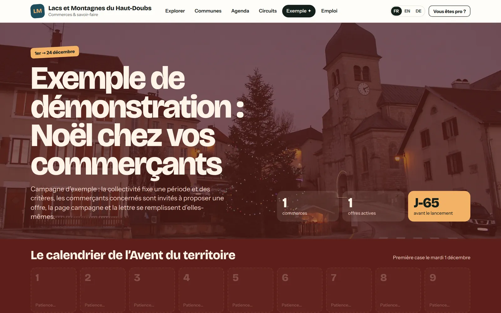

Pas une boutique en ligne. Une fierté partagée.
Beaucoup de collectivités ont financé, ces dernières années, une place de marché locale pour leurs commerçants. La plupart ont fermé. Nous avons étudié pourquoi, et nous avons construit terricom à partir de ces leçons.
Les places de marché locales : un constat d’échec.
Dans son rapport de septembre 2023 sur la politique de l’État en faveur du commerce de proximité, la Cour des comptes dresse le constat d’un échec : ces plateformes n’ont répondu aux attentes ni des consommateurs ni des commerçants, et 54 % des collectivités interrogées n’y voient aucun effet sur la fréquentation de leur centre-ville.
Sa conclusion rejoint la nôtre : l’enjeu, pour le commerce de proximité, tient moins à la vente en ligne qu’à la relation avec ses clients et à sa visibilité sur internet.
Les raisons sont connues : on demandait aux commerçants de s’inscrire, de gérer un stock en ligne, de payer une commission, de préparer des colis. Les habitants, eux, ne voulaient pas acheter leur pain sur internet. Ils voulaient savoir où aller.
Les habitants n’ont jamais voulu acheter leur pain en ligne. Ils veulent savoir où le trouver, et qui le fait.
Cinq principes, tirés de l’expérience.
Tout le monde, dès le premier jour
Nous ne comptons pas sur l’adhésion : toutes les entreprises du territoire sont présentes à l’ouverture, à partir du registre officiel. La vitrine est pleine avant même le lancement.
Aucune vente en ligne imposée
Pas de stock à gérer, pas de colis à préparer. Le portail amène les habitants à pousser la porte. Ceux qui vendent déjà en ligne gardent leurs outils.
Aucune commission
Nous ne prenons rien sur les ventes des commerçants. Jamais. La collectivité porte le projet ; les options des entreprises sont libres.
Une collectivité qui anime
Un portail qui n’est pas animé meurt. Campagnes, circuits, lettre aux habitants : la collectivité donne le rythme, avec un assistant qui lui fait gagner du temps.
Des résultats mesurés
Fréquentation, recherches, appels, itinéraires, commune par commune : les élus savent ce que produit leur investissement, et peuvent le dire.
Une affaire de communauté
terricom n’est pas un outil de plus pour les commerçants : c’est un projet de territoire, qui relie la collectivité, les communes, les entreprises et les habitants.
Ce qui existe, et ce qui manquait.
| Place de marché locale | Annuaire ou site de la collectivité | Fiches sur les moteurs de recherche | terricom | |
|---|---|---|---|---|
| Entreprises présentes | Celles qui adhèrent et s’y tiennent | Une liste rarement à jour | Celles qui ont créé et tiennent leur fiche | Toutes, dès le premier jour, mises à jour chaque mois |
| Coût pour le commerçant | Abonnement et commission sur les ventes | Aucun | Aucun, mais du temps | Aucun ; options libres, sans commission |
| Animation du territoire | Promotions ponctuelles | Actualités de la collectivité | Aucune | Campagnes, circuits, agenda, lettre aux habitants |
| Place des communes | Aucune | Une page, parfois | Aucune | Une page et un espace pour chaque mairie |
| Mesure pour les élus | Chiffre d’affaires de la plateforme | Rarement | Aucune pour la collectivité | Tableau de bord et rapport pour le conseil |
| Données | Détenues par la plateforme | À la collectivité | Détenues par le moteur | À la collectivité, hébergées en France, exportables |
Source : Cour des comptes, « La politique de l’État en faveur du commerce de proximité », septembre 2023.

Mettre en avant, relier, faire circuler.
Un calendrier de l’Avent où chaque case ouvre la porte d’un commerce du territoire. Un circuit des savoir-faire à tamponner le temps d’un week-end. Une lettre qui raconte, chaque mois, les nouvelles installations.
Ce ne sont pas des transactions : ce sont des rencontres. C’est ce qui fait revenir les habitants dans leurs bourgs, et ce qui donne envie aux visiteurs de s’y arrêter.
Nous préparons la démonstration sur vos communes et vos entreprises, avant même notre premier rendez-vous.